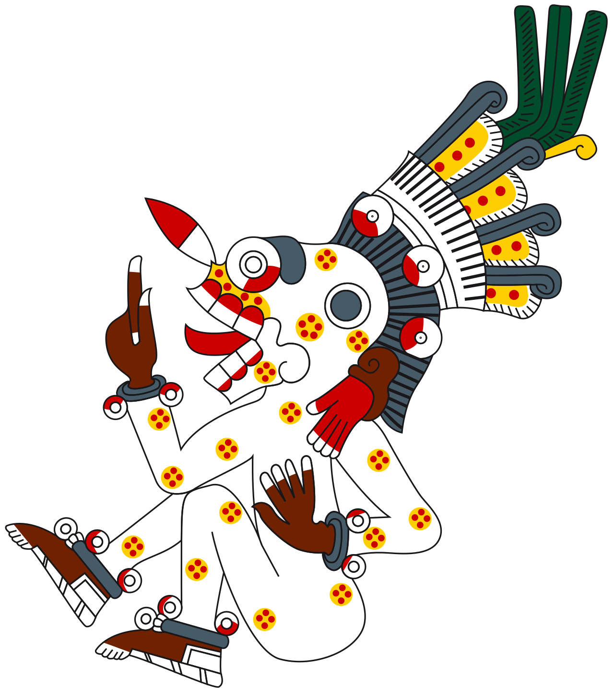

MICTLANTECUHTLI
El Señor del Noveno Nivel

Mictlantecuhtli rige el destino final de las almas. Es el guardián de los huesos sagrados y quien otorga el permiso para que la vida florezca de nuevo. Su reino, el Mictlán, no es un infierno de castigo, sino un lugar de purificación y descanso tras el agotador viaje terrenal.Al morir, el alma debía cruzar el río Apanohuaya con la ayuda de un Xoloitzcuintle. Las ofrendas en la tierra, llenas de color y aroma a copal, guiaban y daban fuerza al difunto para presentarse ante Mictlantecuhtli con respeto. hay que aclara que en muchas culturas, la muerte es algo malo, es algo horrible... y igualmente a sus dios relacionados con la muerte, lo ven algo malo, algo feo, con miedo... pues para los aztecas la muerte es algo fundamental para ellos, ya que ellos decian que es un paso mas para ser dignos de sus dioses, y el mitlan lo veian como algo hermoso y digno, por que no todos pasaban... ya que ellos hacias muchos sacrificios para sus dioses, por que era como forma de agradecerles por darles la vida y muchas cosas, como el agua, el fuego, la cosecha, la noche el dia etc.agulos aztecas eran preparados desde chicos para cumplir su deber, que era el sacrificio... que a muchos aztecas era una forma muy especial de morir. entre muchos sacrificios que hace Mitlantecuhtli a los que se quedan en uno de los niveles del mitlan, es que le arranca su piel y se la da a su buho. ya que el en uno de los mitos de cultura azteca era que Mitlantecuhtli se quito la piel para crear la nueva generacion de humanos y de seres vivos, tando la piel como las biseras, ya que Mitlantecutli en muchos de los mitos de los aztecas es como representado como malo, un ser malo... y tambien en adaptaciones de la cultura popular. pero no...es un dios que solo cumple su papel y es justo...Mitlantecuhtli es representado erronamente por el esteriotipo de las demas culturas, o religiones..
Simbolismo y Atributos
A menudo se le representa con un collar de ojos humanos y orejeras de hueso. Sus mensajeros, los búhos y las arañas, anuncian su presencia en el mundo de los vivos. El color verde jade en sus representaciones simboliza el valor infinito de la vida que él custodia en la oscuridad.El noveno y más profundo nivel del inframundo. Un lugar de quietud absoluta donde las almas, tras un viaje de cuatro años y ocho pruebas mortales, encuentran el reposo final ante la presencia del Señor y la Señora de la Muerte. la señora de la muerte, su esposa fue destinada como un sacrificio para mitlan, pero su pueblo sufrio una fuerte lluvia de lava, matando a todos, mitantecuhtli al ver el sacrifio de la mujer, la eligio como su esposa... asi reinando junto a el.Mitlantecuhtli el dios que defendio al universo, es uno de los dioses principales, pasando al cuarto lugar despues de la traicion de asi tomando el cuarto lugar, el tiene a su corte, ayudantes de el. Su apariencia, es delgada, es casi esqueletica, la piel la tiene pegada a los huesos,no tiene parpados, ya que siempre esta en vigilando, tiene un penacho echo con plumas de buho, tiene un taparravos, que esta degastado, por el tiempo, es muy vanidoso, egocentrico, etc, ya que es el unico dios que tiene poder en el inframundo asi haciendolo muy caprichoso y vanidoso.

El Culto en la Actualidad
Aunque han pasado siglos, la esencia de Mictlantecuhtli sobrevive en la festividad del Día de Muertos. Es el recordatorio de que somos polvo y estrellas, y que la muerte es simplemente el regreso al regazo del gran señor del inframundo. Mitlantecuhtli el dios que con su espada de oxidiana defendio al universo hasta la muerte, el dios del descanso, junto a su esposa reinan el inframundo, desiendo quien es digno para obtener el descanso. El mitlan, lugar de descanso enerto... donde los muertos tienen que pasar los nueves niveles del mitlan para obtener el descando eterno, cada nivel es mas dificil que otro...desde atravesar un rio de almas, dos motañas que chocan, muchos animales que te cazan, ser devorado por un jaguar etc...Para ser digno de entrar al mitlan, se tiene que demostra que son dignos para presentarse con Mitlantecuhtli, si no se quedaran en unos de los niveles sufriendo por la eternidad. Soberano de la oscuridad, guardián de los huesos sagrados y señor del descanso eterno en el noveno nivel. sin su trabajo el quinto sol no huniera existido vida, el dios mas mandilon... uno del panteon de los diosos aztecas, es el fundamental en la creacion de la vida, creado por el universo destinado a catigar a los muertos,a realizar un juicio justo, solo los dignos pasaran al mital.